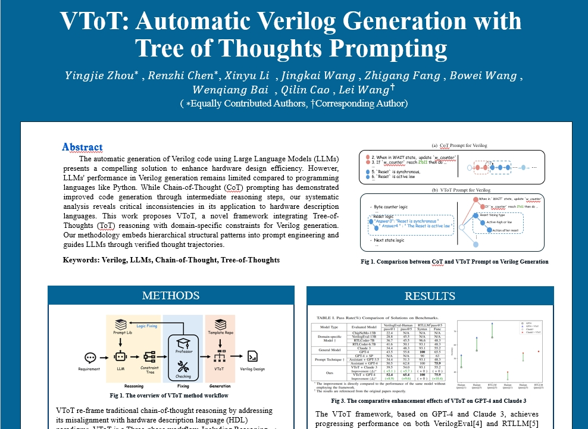
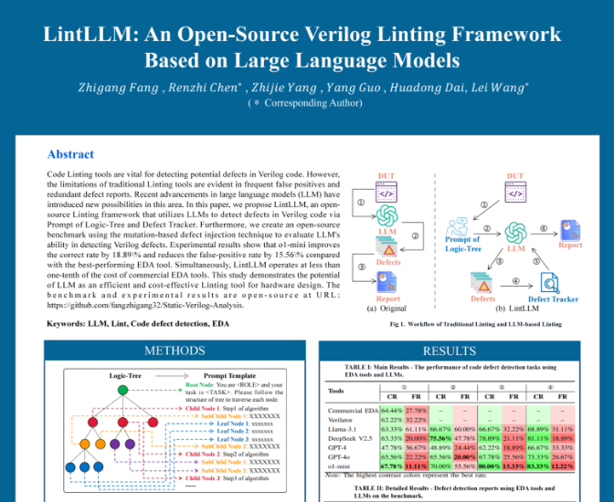
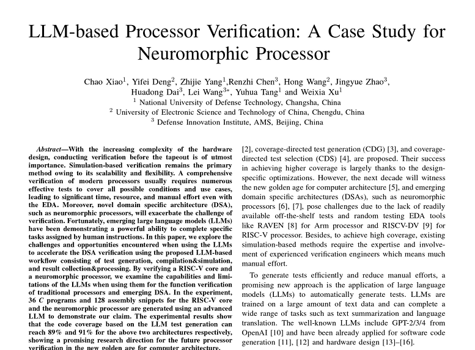
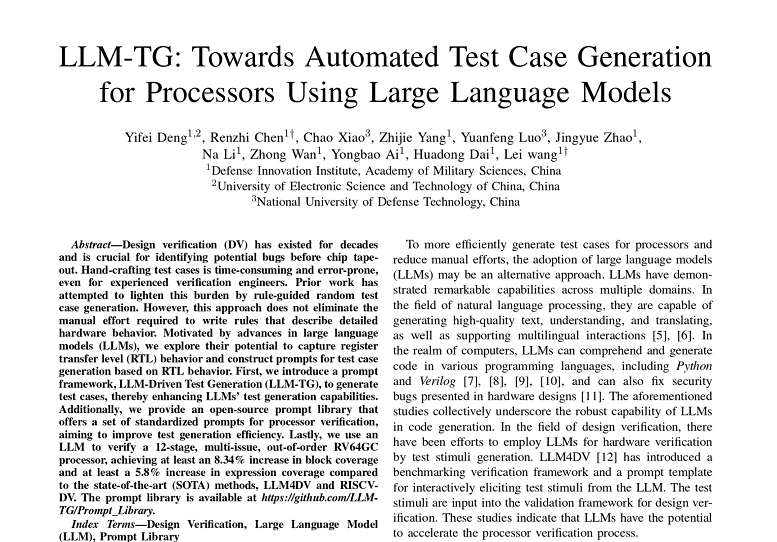
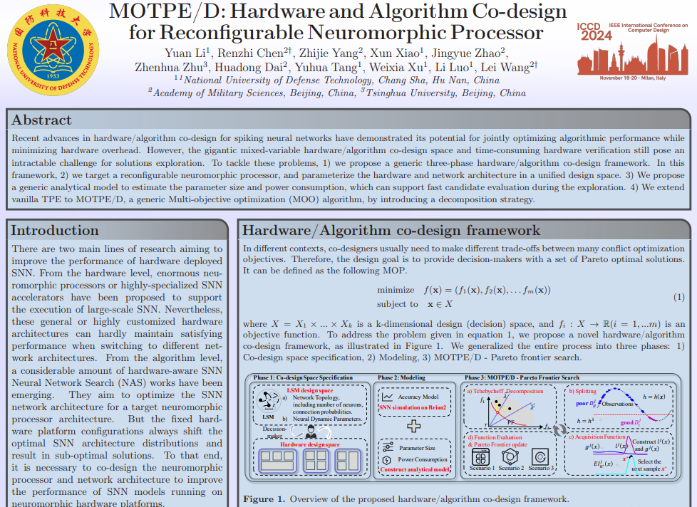
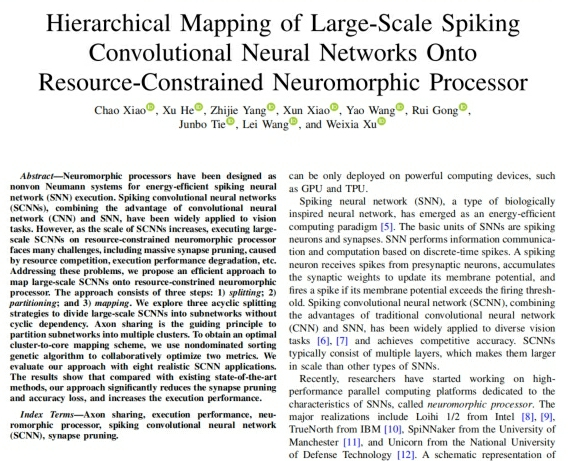
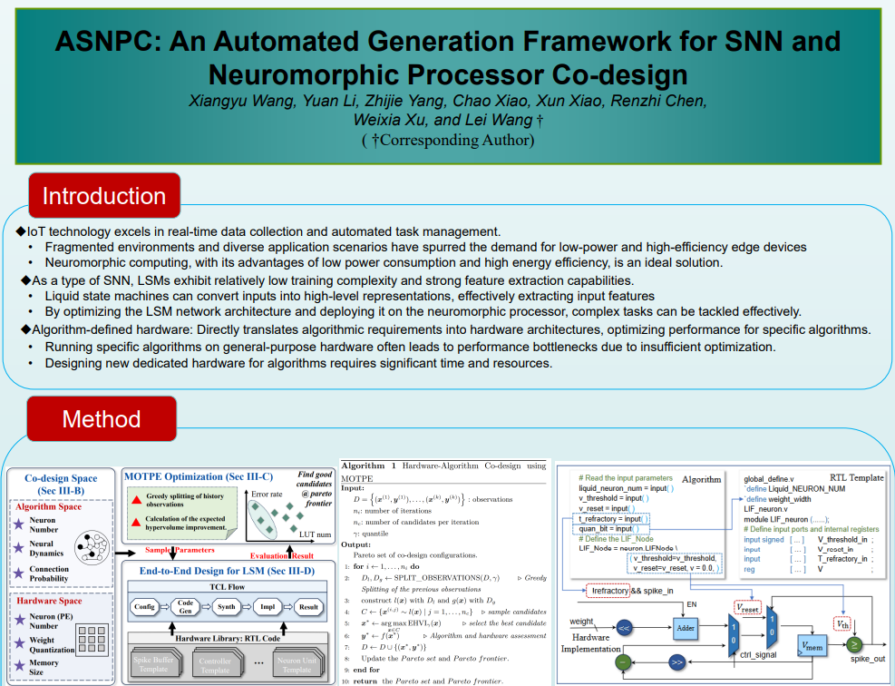

论文集
探索前沿科技研究成果

VToT：通过LLMs使用思维树提示自动生成Verilog
本文被CCFB类会议，2025'DATE（Design, Automation and Test in Europe。 Conference）
周英杰...
|
2024-9-23

LintLLM：基于大语言模型的开源Verilog Linting框架
首次使用LLM完成Verilog代码Linting任务，提升缺陷检测率的同时显著降低使用成本。
方志刚...
|
2025-2-15

基于 LLM 的处理器验证：神经形态处理器案例研究
本文被2024年设计、自动化与测试欧洲会议（DATE）录用。
肖朝...
|
2024-03-27

VToT：通过LLMs使用思维树提示自动生成Verilog
本文被IEEE第42届国际计算机设计会议（ICCD 2024）收录，会议于2024年在意大利米兰举行。ICCD是计算机体系结构与设计领域的权威会议，CCF推荐为B类会议。相关代码与提示库已开源。
邓一飞...
|
2024-10-24

PerturbGen：一个基于种群扰动的硬件测试生成框架
本文提出了一个种群扰动的硬件测试生成框架PerturbGen，显著提升处理器验证中的覆盖率。
王静凯...
|
2024-11-20

针对可配置神经形态处理器的硬件与算法协同设计
本文被CCFB类会议，2024'ICCD（IEEE International Conference on Computer Design）接收录用为Short Paper。
李媛...
|
2024-11-8

大规模脉冲卷积神经网络到资源受限类脑处理器的分层映射
本文被CCF A类期刊，IEEE Transactions on Computer-Aided Design of Integrated Circuits and Systems （缩写：TCAD）接收。
肖朝...
|
2024-5-1

ASNPC：面向SNN和类脑处理器协同设计的自动化生成框架
本文被CCFB类会议，2025'DATE（Design, Automation and Test in Europe）
王向宇...
|
2025-1-17